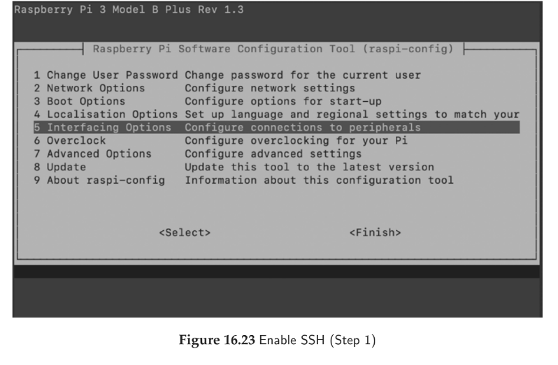
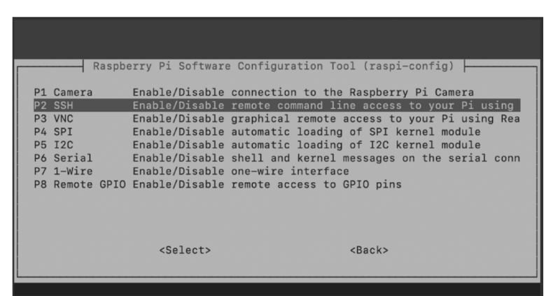
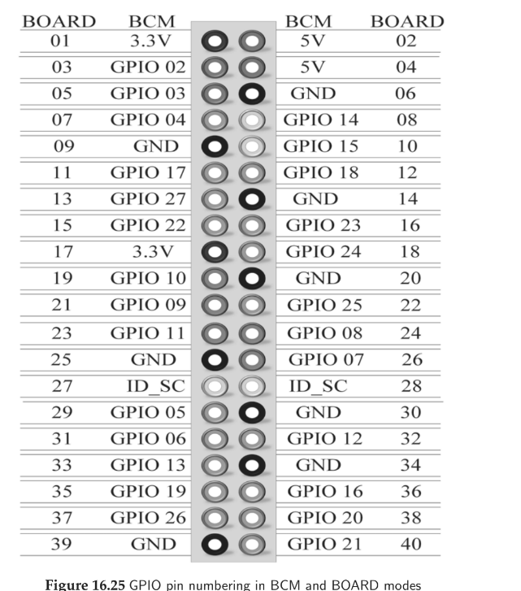
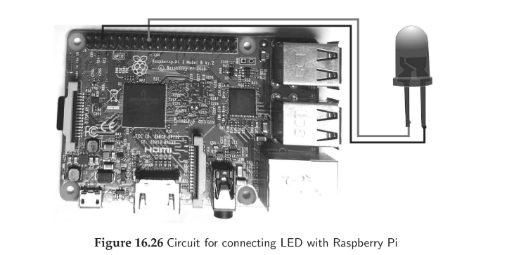
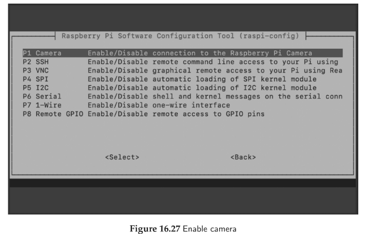
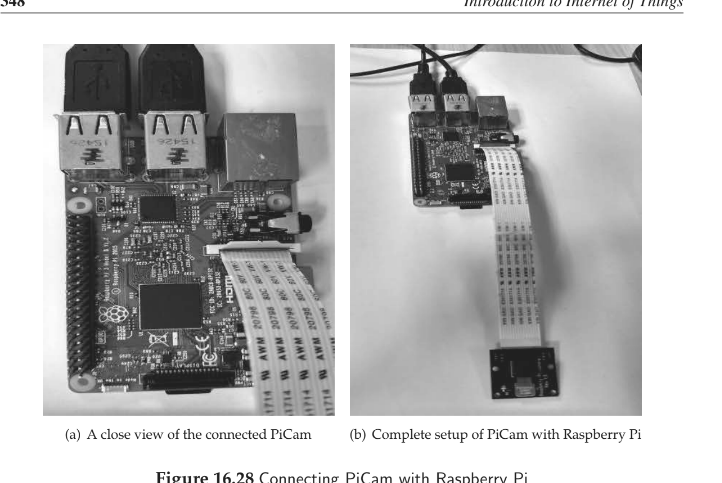
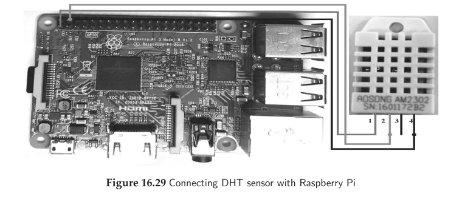
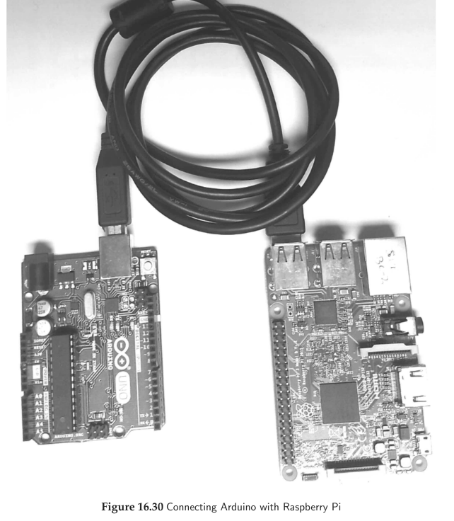
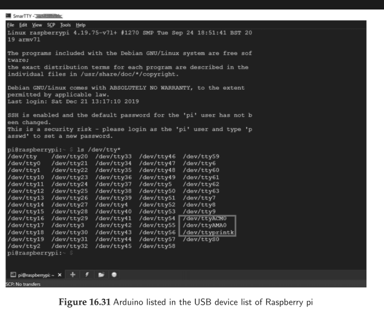

Both devices were developed by the Raspberry Pi Foundation (UK), but they address entirely different computing paradigms:
| Feature / Dimension | Raspberry Pi (e.g., Pi 4 / Pi 3B+) | Raspberry Pi Pico (RP2040) |
|---|---|---|
| Device Category | Single-Board Computer (SBC) | Microcontroller Board |
| Processor Architecture | ARM Cortex-A Series (e.g., Quad-core Cortex-A72 @ 1.5–1.8 GHz, 64-bit) | Dual-core ARM Cortex-M0+ @ 133 MHz (32-bit RISC) |
| Operating System | Linux-based (Raspberry Pi OS, Ubuntu, RetroPie) | No OS (Bare-metal MicroPython, CircuitPython, C/C++) |
| System Memory (RAM) | 1 GB, 2 GB, 4 GB, or 8 GB LPDDR4 SDRAM | 264 KB on-chip multi-bank SRAM |
| Internal / Primary Storage | Removable MicroSD card (e.g., 8–128 GB) or USB SSD | 2 MB On-board QSPI Flash memory |
| Power Consumption | High (~3 W to 15 W); requires dedicated 5V/3A USB-C PSU | Ultra-low (~100 mW to 300 mW); runs on 1.8V–5.5V batteries |
| Display & Multimedia | Dual 4K micro-HDMI, DSI Display port, 3.5mm Audio/Video | No native display hardware (drives I2C/SPI OLEDs or PIO VGA) |
| Networking & Comms | Gigabit Ethernet, Dual-band 2.4/5GHz Wi-Fi, Bluetooth 5.0 | None on base Pico (Pico W adds 2.4GHz 802.11n Wi-Fi/BT) |
| Primary Applications | Media centers, web servers, AI/computer vision, desktop, robotics master | Real-time motor control, sensor nodes, low-power IoT, wearables, peripherals |
The RP2040 is the custom silicon microcontroller designed by the Raspberry Pi Foundation, delivering exceptional dual-core performance, massive on-chip SRAM, and unique hardware configurability:
pi and default password is raspberry.In headless IoT environments, monitors and keyboards are omitted; developers access the Raspberry Pi command line remotely over the network using SSH (Secure Shell - Port 22).


sudo raspi-config in terminal → Navigate to Interfacing Options (Fig 3.1) → Select P2 SSH (Fig 3.2) → Choose Yes.ssh pi@<Raspberry_Pi_IP> in the terminal and enter password./etc/wpa_supplicant/wpa_supplicant.conf:
network={
ssid="Router_SSID"
psk="Router_Password"
}

GPIO.setmode(GPIO.BOARD).GPIO.setmode(GPIO.BCM).Click any pin on the header below to view its physical number, BCM label, power rail, and hardware bus mappings:
Physical BOARD Pin: 01
BCM GPIO Label: 3.3V DC
Pin Category: DC Power Rail
Hardware Capabilities:
Demonstrates how to run Python scripts interactively in the terminal or as standalone .py scripts.
# File: print_text.py
# Run on terminal: python3 print_text.py
print("Hello World")
Execution Output: Prints Hello World to the terminal standard output.
Blinks an external LED on and off at 1-second intervals using GPIO pin 18 in BCM mode.

import RPi.GPIO as GPIO # Import Raspberry Pi GPIO library
import time # Import time library for sleep delays
GPIO.setwarnings(False) # Suppress warning messages
GPIO.setmode(GPIO.BCM) # Use Broadcom (BCM) pin numbering scheme
GPIO.setup(18, GPIO.OUT, initial=GPIO.LOW) # Configure GPIO 18 as output, initial state LOW
try:
while True: # Infinite loop
GPIO.output(18, GPIO.HIGH) # Turn LED ON (3.3V)
time.sleep(1) # Delay 1 second
GPIO.output(18, GPIO.LOW) # Turn LED OFF (0V)
time.sleep(1) # Delay 1 second
except KeyboardInterrupt:
GPIO.cleanup() # Reset GPIO pins cleanly on exit
Circuit Output: External LED turns ON for 1s, then OFF for 1s repeatedly.
Connect an 8 MP Raspberry Pi Camera module via the dedicated CSI ribbon slot and control it via Python.


from picamera import PiCamera
import time
camera = PiCamera() # Initialize camera object
camera.start_preview() # Display live video preview on monitor
time.sleep(5) # Allow sensor to calibrate exposure & white balance
camera.capture('/home/pi/Desktop/image.jpg') # Capture still image
camera.stop_preview() # Close preview
from picamera import PiCamera
import time
camera = PiCamera()
camera.start_preview()
camera.start_recording('/home/pi/Desktop/video.h264') # Begin recording H.264 stream
time.sleep(5) # Record 5 seconds of video
camera.stop_recording() # End recording
camera.stop_preview()
Acquires digital temperature and relative humidity readings using the Adafruit DHT library.

import Adafruit_DHT
import time
sensor = Adafruit_DHT.DHT11 # Sensor type (DHT11 or DHT22)
pin = 4 # Connected to BCM GPIO 4
while True:
humidity, temperature = Adafruit_DHT.read_retry(sensor, pin)
if humidity is not None and temperature is not None:
print('Temperature: {0:0.1f}°C Humidity: {1:0.1f}%'.format(temperature, humidity))
else:
print('Failed to retrieve reading. Retrying...')
time.sleep(2)
Console Output: Temperature: 23.6°C Humidity: 45.0%
Demonstrates network socket programming over port 5000 to transfer messages between two networked devices.
import socket
server_socket = socket.socket(socket.AF_INET, socket.SOCK_STREAM)
port = 5000
server_socket.bind(('0.0.0.0', port)) # Bind to all local interfaces
server_socket.listen(5) # Listen for incoming client connections
print("Server is listening on port 5000...")
while True:
client_conn, client_addr = server_socket.accept() # Accept connection
print(f"Client connected from: {client_addr}")
client_conn.send(b"Connection Established - Data from Pi Server")
client_conn.close()
import socket
client_socket = socket.socket(socket.AF_INET, socket.SOCK_STREAM)
server_ip = '192.168.1.100' # IP address of the Server Raspberry Pi
port = 5000
client_socket.connect((server_ip, port))
data = client_socket.recv(1024) # Receive up to 1024 bytes
print("Received from server:", data.decode())
client_socket.close()
Combines Arduino's real-time hardware interfacing with Raspberry Pi's high-level computation via USB-serial communication at 9600 baud.


import serial
import time
ser = serial.Serial('/dev/ttyACM0', 9600, timeout=1) # Open serial port
time.sleep(2) # Wait for Arduino reset
while True:
if ser.in_waiting > 0:
incoming_line = ser.readline().decode('utf-8').rstrip()
print("Received from Arduino:", incoming_line)
ser.write(b'3\n') # Send byte '3' to Arduino
time.sleep(1)
int r = 1;
void setup() {
Serial.begin(9600);
}
void loop() {
Serial.println("Hello"); // Send "Hello" to Raspberry Pi
if (Serial.available()) {
char ch = Serial.read();
if (ch >= '0' && ch <= '9') {
r = r * (ch - '0'); // Multiply character numerical value
Serial.print("Computed value: ");
Serial.println(r);
}
}
delay(1000);
}
Click on any question below to toggle its detailed university-format answer:
RPI-RP2. Drag and drop the compiled .uf2 firmware file onto it; the board automatically flashes itself and reboots.
10 Short-Answer Type University Exam Questions & Model Solutions
Long-Answer Analytical & System Design Questions
Answer:
Answer:
Answer:
| Factor | Raspberry Pi Suitability | Raspberry Pi Pico Suitability |
|---|---|---|
| Processing Power | Ideal for IoT Gateways, edge ML inference, image recognition, and database aggregation. | Ideal for Edge Sensor Nodes, analog signal filtering, and real-time actuation. |
| Power Profile | Unsuitable for battery operation; requires steady grid/mains power. | Outstanding for remote, solar, or battery-powered field sensors. |
| Network Connectivity | Native dual-band Wi-Fi, Gigabit Ethernet, Bluetooth. Direct cloud connection via MQTT/HTTPS. | Requires external modules or the Pico W variant for wireless connectivity. |
Answer:
Answer: